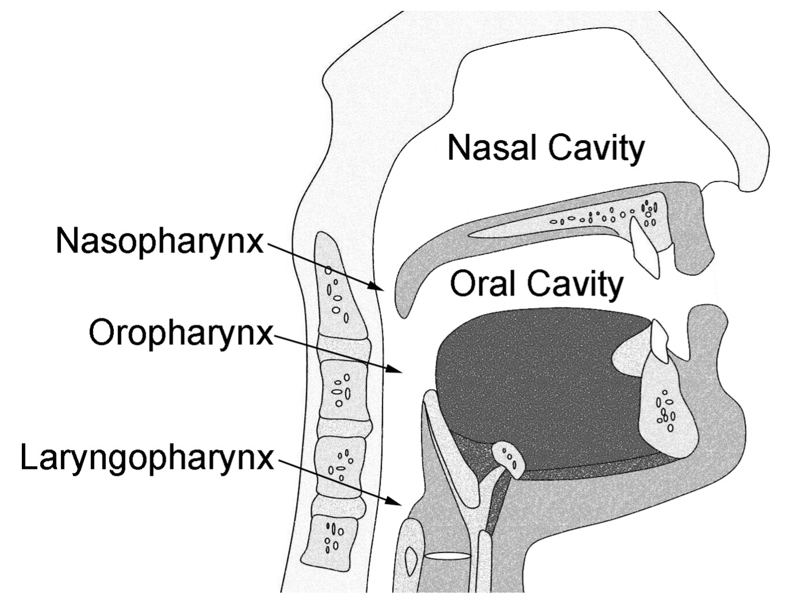
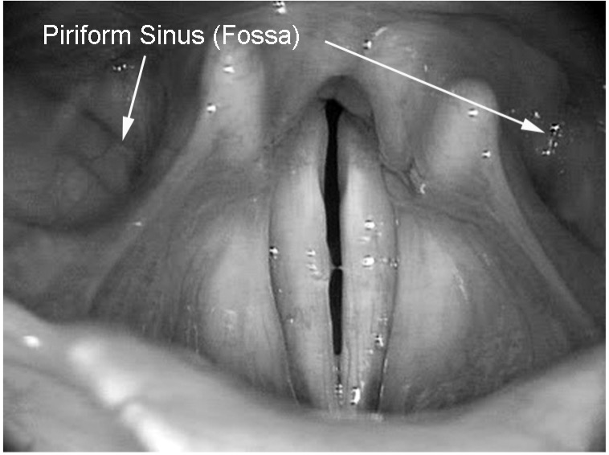
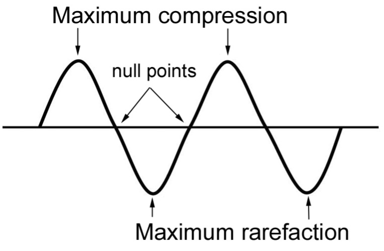
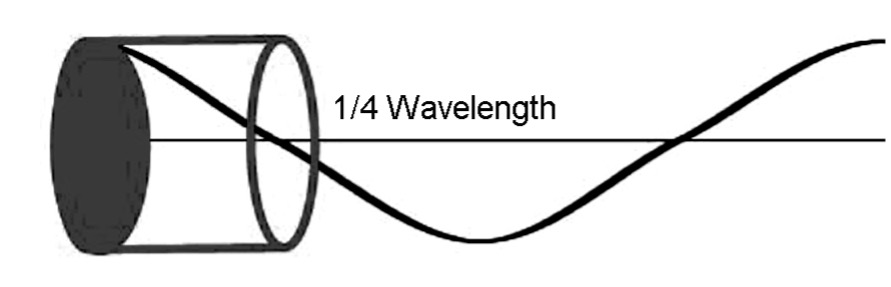
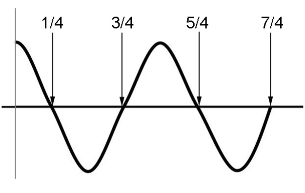
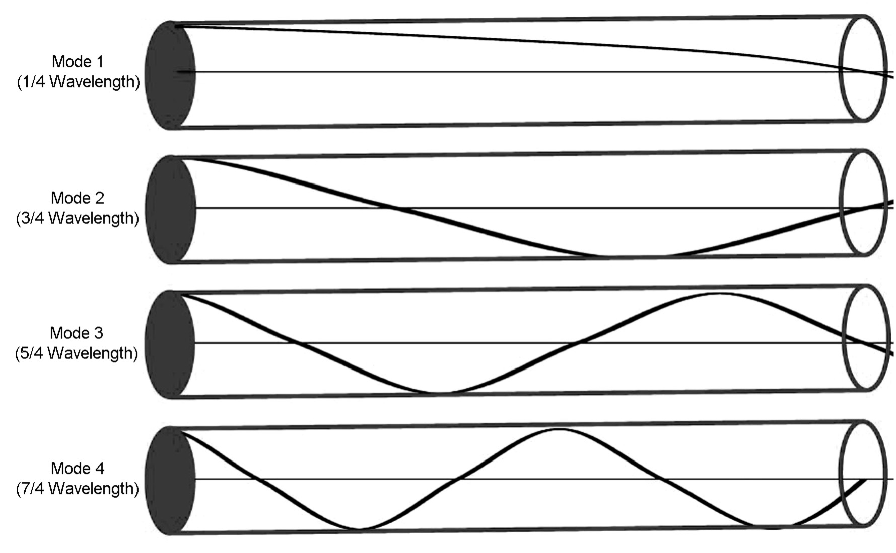
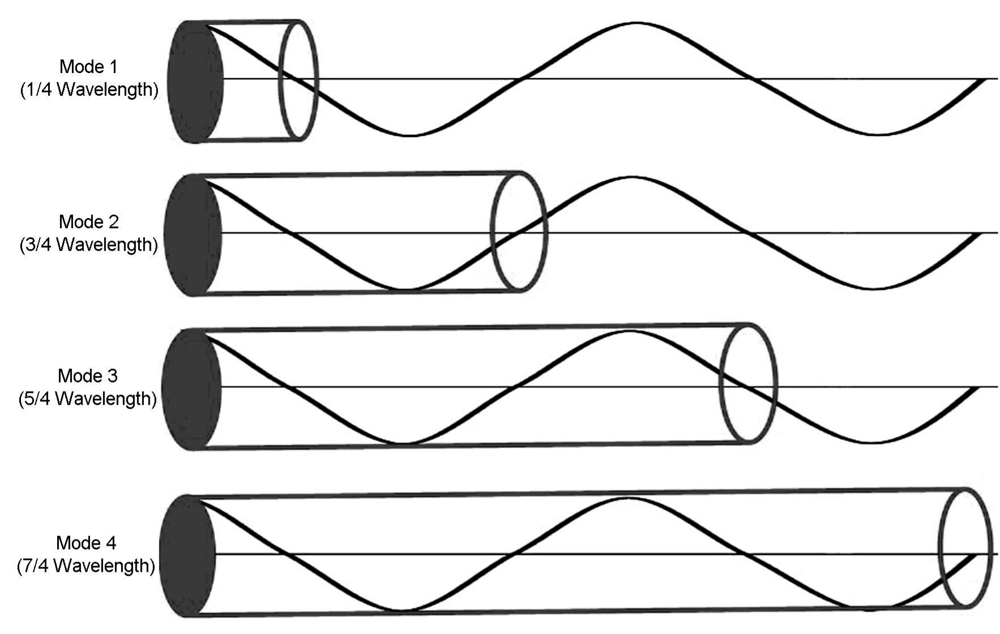
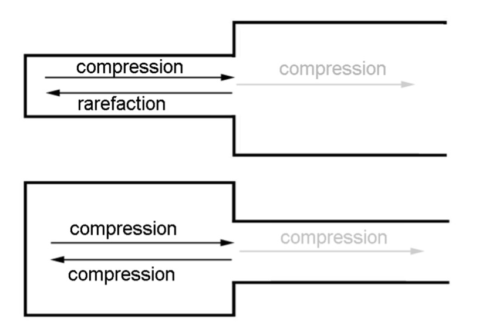
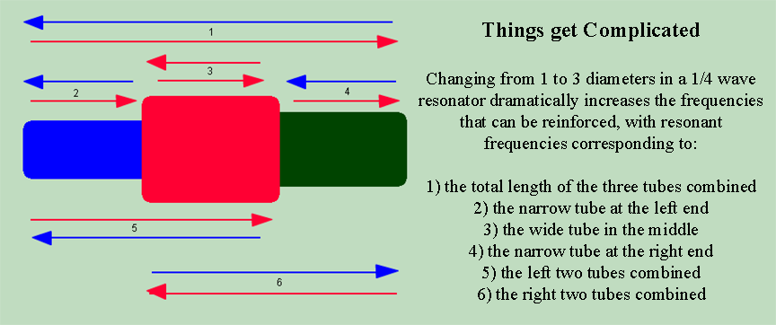

Chapter 3
How do the sounds produced by our vibrating vocal folds—that obnoxious buzz we heard synthesized previously—turn into the beautiful sounds our ears and brains interpret as singing? The answer lies in resonance.
All musical instruments, including the human voice, have at least three features in common: to make sound they must have a power source, a vibrator, and a resonator. For a trumpet, the power source is the breath, the lips are the vibrator and the tubing of the instrument is the resonator. Violins and other bowed stringed instruments use the bow as the power source, the string as the vibrator and the body of the instrument as the resonator. Pianos rely on the hammer—actuated by the fingers—as the power source, the string as the vibrator and the sounding board as the resonator.
How does this apply to the human voice? Actually, the voice has a lot in common with the trumpet: the power source is the breath, the vibrator is a pair of vibrating folds of tissue (the vocal folds), and the resonator is the vocal tract.
All musical instruments also have a means of articulation. For most instruments, articulation is strictly a musical phenomenon, described through words such as staccato, legato, marcato, and subito piano. The human voice, of course, also is capable of articulatory gestures. It stands alone, however, in its most important type of articulation: language.
Articulation in instruments other than the human voice is almost always achieved through variations in the power source or the vibrator. For example, orchestral wind instruments differentiate staccato and legato through control of breath and embouchure. Stringed instruments do the same by controlling the contact of the bow with the string. The human voice can also be articulated through changes in the power source and vibrator; however, it is the only instrument in which articulation also is created by changes in in the shape and configuration of the resonators.[1]
What is resonance? A practical definition comes from the Merriam-Webster Collegiate Dictionary: Resonance is the intensification and enriching of a musical tone by supplementary vibration. Two key factors are present in this definition:
Intensification (amplification) and enrichment (change of timbre);
Supplementary vibration, that is, vibration of something beyond the original sound source: little vibrations become big vibrations.
To better understand resonance, we will first look at a non-musical example. Imagine a child being pushed on a swing. This mechanical system will be resonant (or in resonance) when the person doing the pushing synchronizes his action with the swinging child (3/1).
Media 3/1: Resonance, modeled by a child on a swing
The result of this synchronization is the maintenance or enlargement of the arc along which the swing travels. As in Webster’s definition of resonance, small vibrations (the gentle pushing of the helper), induce large vibrations (the movement of the swinging child). If, however, the person doing the pushing gets out of synch with the swinger, the swinging eventually—perhaps even abruptly—stops (3/2).
Media 3/2: Resonance stops when power source and vibrator are not coordinated
Many other non-musical examples of resonance can be found. Rattles might be heard in an automobile at certain, specific speeds. Household objects might vibrate in response to certain tones played through a stereo system. Crystal wineglasses “sing” when a wet finger is rubbed around the rim. In these examples, the objects exhibiting resonance have physical traits in common: they have mass and compliance. Indeed, any object that possesses mass (as measurable by weight) and compliance (the ability to be deformed) can serve as a resonator.
Forced Resonance
Musical resonance often is based on this principle of mass and compliance; stringed instruments, including the guitar and piano, resonate in this manner. This form of resonance is given the name forced resonance (also known as conductive resonance), which requires a direct, mechanical connection of the vibrator to the resonator. Forced resonance occurs in the violin because the vibration of the strings is transferred directly to the body of the instrument (the resonator) through the bridge. The same thing happens in the piano and guitar.
Supplementary vibration, as described in the previous paragraph, begins the process of musical resonance. To complete it, the sound somehow must be intensified and/or enriched. To understand how this can happen, think about the relative surface areas of the vibrator and the resonator of a piano, that is, the strings and the sounding board. The vibrating string has a relatively small surface area. Therefore, even if it is actuated to high amplitude of vibration, relatively few molecules of air will be induced to the compressions and rarefactions of sound. The piano’s soundboard, by contrast, has a very large surface area and is made of highly compliant material (generally spruce wood) that is easily set into vibration, which therefore is able to cause many more air molecules to compress and rarefy. The result is increased amplitude of sound.
Forced resonance also occurs in the human voice. For example, people often feel vibrations in the chest and head while singing. These body parts have mass and compliance and therefore act as forced resonators; they do not, however, make the voice louder or alter its timbre as far as a listener is concerned. Skin, muscle, fat and other tissues damp (inhibit) free vibration and prevent sound propagation beyond the body. Vibrations within the body are a singer’s private resonance; the singer feels them, but nobody else hears them.
Forced resonance provides a partial answer to the question that was posed in Chapter 2: does the imagery often used by singers and their teachers have a scientific basis? The answer is a resounding “sometimes.” Many of the images and descriptive sensations that are used, such as placing the tone forward or in the mask, are related to physical sensations created by forced resonance. In reality, placement is an illusion; you can’t place the sound in your mask, on your hard palate, through the top or your head, or even in your elbow. But depending on your personal physiognomy, you might indeed experience resonance or feelings of tone placement in one or more of those regions (well, perhaps not your elbow…). While these sensations—caused by forced resonance—can be extremely helpful to individual singers, they are less reliable when used for teaching. There is a simple reason for this dichotomy: no two people share the same body. Because we are unique individuals, one singer’s experience of resonance often is very different from that of another, even if both produce similar sounds using the same fundamental vocal technique.
Free Resonance
If the human voice does not use forced resonance for sound intensification and enhancement, how is a resonant sound produced? The answer lies in a different form of resonance, called free resonance (also known as sympathetic resonance), which is the result of vibrations of air molecules and reflections of soundwaves within a void. To function as a free resonator, a structure must be hollow, have volume (not to be confused with loudness—think in terms of cubic centimeters rather than decibels), and have an opening through which soundwaves can exit. Wind instruments, including woodwinds and brass, pipe organs and the human voice, all employ free resonance.
Free resonators in the human body consist of the trachea, larynx, and vocal tract (Figure 3-1).

Figure 3-1: Free resonators of the vocal tract
The vocal tract can be subdivided into six separate regions: the laryngopharynx, which extends from the vocal folds (glottis) to the tip of the epiglottis; the oropharynx, which continues upward from the tip of the epiglottis to the soft palate; the oral cavity (mouth); the nasopharynx, which is the passageway behind the soft palate into the nose; and the nasal cavities themselves. These last two structures, however, only function as free resonators when the soft palate is lowered, which allows air, and therefore soundwaves, to pass into and through the nose. An additional area of free resonance is found in the piriform sinus, also known as the piriform fossa (recesses), which is a hollow space that surrounds the larynx at the base of the pharynx (Figure 3-2).

Figure 3-2: Piriform sinus (fossa)
At the most basic level, free resonance acts as an acoustic filter. Whenever a soundwave enters a hollow space, such as the tubing of a wind instrument or the vocal tract of a singer, some of its component frequencies are permitted free passage into the atmosphere where they can be perceived as sound. Other frequencies, however, will be strongly attenuated or even completely damped out, never making it out the end of the resonator or to the ears of a listener. In this regard, an analogy might be made with decorative nozzles on a pastry bag that allow frosting to pass through in different shapes.
Many readers will be satisfied with the rudimentary explanation of free resonance provided in the previous paragraph; but if your curiosity has been piqued, read on to discover exactly how and why it occurs. There are two ways to look at this process—we’ll start with the more straightforward version.
Free resonance, explained through wavelength (the basics)
Free resonance easily can be explained through the spatial component in sound: wavelength (λ). As a reminder, wavelength measures the physical distance between successive wavefronts as sound travels through a medium. Acoustic pressure within each wave constantly varies, passing through points of peak compression, peak rarefaction, and null points where pressure is zero (Figure 3-3).

Figure 3-3: Divisions of the acoustic wave
For a pure tone as represented by a sine wave, these pressure variations always occur at specific, unvarying locations. Using the first peak of compression as the starting point, null pressure (also called a zero crossing) is found at one-quarter λ, peak rarefaction at one-half λ, null pressure again at three-quarters λ, with peak compression returning at the conclusion of the cycle.
Let us now consider a model resonator that is a cylindrical tube of uniform diameter with one end open to the atmosphere and the other closed by a vibrating sound source (e.g. the vocal folds or a trumpeter’s lips). Sound freely will pass through this resonator only if a zero crossing in the waveform coincides with the open end of the resonator tube (Figure 3-4); if compression or rarefaction in the wave intersects with the opening, most of the acoustic energy is blocked and little or no sound can exit the tube. You can demonstrate this phenomenon by singing into a long cardboard tube or a length of garden hose. Some pitches will be easy to sing, others will be nearly impossible to produce (we will return to this experiment later in the chapter to explain the details more thoroughly).

Figure 3-4: Soundwave exiting a resonator with zero crossing at open end of the tube
Exercise your Brain
How can sound possibly be prevented from passing through the open end of a hollow tube? The answer requires us to delve a bit more deeply into science. We start with the phenomenon of an echo. Can you recall the first time you heard an echo that was so clear you were able to distinguish words in the sound that came back to you? We assume that this common event occurs because sound hits a large solid object and is reflected back toward its source. This is exactly how we perceive the echo—but the reality is somewhat more complicated.
Here is a quick review question for you: how is sound created? I trust you remember the answer from Chapter 2: sound is created by a sudden (acute) change in pressure. But why is this relevant to an echo? The answer lies in what happens when a soundwave collides with a solid object. Let’s look at a couple of analogies. Those of you who have seen the film Animal House will remember the scene in which a marching band is led down a dead-end alley; the band hits a wall, causing the players to bunch up in a massive collision. The resulting tangle of bodies and instruments can be seen as a sudden change of pressure. To untangle the mess, players must reverse direction: last in, first out (of course, we don’t see that part of the scene in the final cut of the movie). Another example is found in example 3/3, which uses high speed photography to show a bouncing water balloon.
Media 3/3: Deformation causing pressure change
As the balloon hits the ground, its mass is distributed radially, briefly creating something that looks more like a pancake than a balloon; as it rebounds, the balloon quickly resumes its original shape. Just as in the previous example, the collision between the moving and solid object creates a sudden change of pressure, which now manifests as a change in the shape and thickness of the water balloon.
When a soundwave hits a solid object, the action is very similar to that of the water balloon striking the ground. It can go no farther, causing its component pressures to create a pileup. Relative to the original, the area of collision represents a sudden change of pressure, which, as we know, is all that is required to generate sound. Therefore, an echo technically is a new sound, not a reflection of the original. This new sound will have all the attributes of the original, albeit with some reduction in amplitude (some of the collision force is absorbed by the compliance of the object it strikes). Furthermore, compression and rarefaction phases in the wave remain intact (at the moment of impact, compression and/or rarefaction intensify, creating the acute pressure changes that produce the new wave).
Now it’s time to put on your theoretical thinking caps. Imagine a soundwave colliding with a total vacuum. This situation is impossible in the physical world; nonetheless, we can infer precisely what would happen were it to occur. What happens to sound in a vacuum, such as outer space? Don’t look to the movies for your answer—most of them get it wrong! The explosions that make Star Wars so exciting actually would be inaudible. Stanley Kubrick was more realistic in his classic 2001: A Space Odyssey, which depicted space as a silent void. If a soundwave traveled through normal atmosphere to impact this void, it would be stopped dead in its tracks, just as if it had struck a solid object. But now, strange things start to happen. Let’s look first at the compression phase within sound. As this compression strikes the vacuum, all of its energy instantly will drop to zero, which is a negative change. When the rarefaction strikes the vacuum, it too instantly goes to zero, which actually is a positive change. As with a traditional echo, the collision of the soundwave with the vacuum creates sudden changes of pressure, which in turn create a new soundwave that travels back toward the original source. But this new wave is the mirror image of the original: compression has been changed to rarefaction; rarefaction is transformed into compression (phase change).
As was previously stated, when sound hits a solid object, some of the energy is lost in the collision, reducing the amplitude of the new wave that is created. However, if the collision were with an object that is infinitely hard, which is possible only in theory, all of the energy in the original wave would be transferred to the new. The same is true in our theoretical collision of sound with a vacuum; all the energy in the original wave would be transferred—as a mirror image—to the new. That can’t happen in the real world, but something pretty close is possible. It turns out that as sound travels through an area of confinement, such as a cylindrical tube, the opening at the end is a sudden expansion of space that functions just like striking a vacuum.
When sound comes to the end of the tube, most of its energy is diverted into a new, mirror image wave traveling back toward the source of the original sound. But because the effect of the opening is that of a partial, not complete vacuum, some of the energy is lost in transition, just as when sound strikes an object that is not infinitely hard. Some of the energy might even make it past the barrier, traveling out into the atmosphere, albeit at greatly reduced amplitude.
So in a quarter-wave resonance system, the only way for the sound to make it past the barrier created by the open end of the tube is for it to “sneak past” when it is transitioning from one phase to the other, which occurs every time there is a null pressure point (zero crossing) in the wave.
As we already have seen, the first zero crossing occurs at one-quarter λ. Because resonance first occurs when the physical length of the resonator equals one-quarter λ of the soundwave passing through it, open/closed resonance systems often are called quarter-wave resonators.
Our next step is to calculate the actual frequency of resonance for this quarter-wave system. Returning to the formula for wavelength that was presented in Part 2 of Chapter 2, we know that λ=C/F (wavelength equals the speed of sound divided by frequency). If you remember some of the algebra you studied in high school, you know that this equation can be restated as F=C/λ. Remember, as long as we know any two of these variables, the third can be determined. In this case, we want to calculate the frequency of resonance, which requires us to know the speed of sound and its wavelength. Because the physical length of the resonator always is exactly one-quarter of the total wavelength allowed to pass through it (the place where the first zero crossing occurs), we can make a substitution in our formula, replacing λ with 4L (four times the length of the tube), or F=C/4L.
Now let’s solve the equation for a resonator with a length of 35cm. The speed of sound is about 350m/s, which must be divided by 140cm (4L). We’ll need a common unit of measure to do the math, so move the decimal point in the length measurement two places to the left to convert centimeters into meters. Now, divide 350 by 1.4. The answer, 250, is the frequency of resonance. If you have any doubts about whether or not this is correct, cut a piece of PVC pipe to a length of 35cm and then buzz your lips into it like you were playing a trumpet. The only pitch you will likely be able to produce with any significant amplitude is B3, which is approximately 250Hz.
Up to this point in our discussion, only one resonant frequency has been demonstrated for a quarter-wave resonator. Music would be extremely limited, however, if wind instruments, including the voice, could only resonate one pitch! Obviously, this is not the case. Most wind instruments—with the exception of the natural French horn and the bugle—are constructed with finger holes, keys, slides or valves that allow the effective length of the resonator to be changed and the musical scale to be played. Bugles and valveless horns, however, are still able to play many different pitches. This is possible because quarter-wave systems actually have multiple resonant frequencies. Reexamination of a soundwave shows how this can occur. As we know, closed/open systems are resonant when the first zero crossing of a soundwave coincides with the open end of the tube; it will also be resonant when any other zero crossing is found there. Figure 3-5 illustrates the locations of these events, which are found at 1/4λ, 3/4λ, 5/4λ…

Figure 3-5: Zero crossings (null pressure) in a soundwave
By combining images of soundwaves and resonators, it is possible to see more clearly how sounds of different wavelengths fit in the tube become resonant (Figure 3-6).
The frequencies (or pitches) associated with each resonance mode displayed in Figure 3-6 also can be determined. For demonstration purposes, the tube will again be 35cm long. It already has been shown that the first resonant frequency for this tube is 250Hz. Subsequent resonance modes occur at 3/4λ, 5/4λ, 7/4λ, etc. The additional resonant frequencies for this tube therefore are 750Hz (3 X 250), 1,250Hz (5 X 250), 1,750Hz (7 X 250), etc.

Figure 3-6: Resonance series in a resonator of fixed length
Figure 3-6 demonstrated how a fixed-length tube is able to resonate multiple frequencies with different—albeit numerically related—wavelengths. We can look at the relationship between these two parameters from the perspective of a single wavelength that interacts with different resonators (Figure 3-7).

Figure 3-7: Different length resonators with constant soundwave
The natural series of harmonics was discussed in both parts of Chapter 2. What is the relationship between that series and the resonance series for this resonator model? There is a lot of common territory. The harmonic series consists of whole number multiples of the fundamental frequency; the resonance series, however, consists only of odd number multiples of the first resonant frequency. Therefore, closed/open resonators with uniform diameter also can only reinforce every other pitch in the harmonic series. This explains why cylindrical-bore instruments such as natural horns and bugles require very long resonators; the whole-steps and half-steps commonly found in musical melodies cannot be played until the uppermost resonant modes of the instrument are used. But as we’ll see in a little while, the vocal tract is very different; in spite of its short length, its unique configuration allows it to be an effective resonator over a wide range of frequencies.
Free resonance, explained through the time element of sound (advanced)
To further understand how a hollow tube, such as the vocal tract or a trombone, can serve as a resonator that amplifies and enhances sound, we must delve a bit deeper into the world of echoes and the speed of sound.
Exercise your brain
An interesting experiment can be performed that demonstrates the relationship between echoes and the speed of sound. Stand in front of a very long set of stairs (as might be found in a football stadium) and loudly clap your hands together a single time. The vertical face of each stair step will return a separate echo. However, since each successive step is a little farther away, its echo returns a fraction of a second later. The result is a periodic echo that is heard as a musical pitch. Using knowledge of the relationship between wavelength and frequency (Chapter 2), it is possible to calculate this pitch. For example, if each step is 35cm deep (a little less than fourteen inches), the echo will produce a frequency of 500Hz, a slightly sharp B4, a major seventh above middle-C on the piano.
If you are confused, take a moment to consider the arithmetic involved. The equation for finding wavelength states that λ = C/F (wavelength equals the speed of sound divided by frequency). This equation can be restated as F = C/λ (frequency equals the speed of sound divided by wavelength) or C = λF (the speed of sound equals wavelength multiplied by frequency). As long as you know the value of two of the three items, the third can always be calculated. For this example, the wavelength is twice the length of each step (the echo moves forward and back this distance), or 70cm. Remember to convert sound and wavelength to common units of measurement, and divide the speed of sound (350m/sec) by the wavelength (0.7m)—if you can’t do this in your head, use a calculator. The result is 500. Because this is the value for frequency, we know that it is 500Hz.
As we now know, there are two different kinds of echoes. When sound strikes a solid object, its echo is returned in-phase (compression and rarefaction are the same in the echo as in the original). But when sound encounters a sudden void, such as the open end of a tube, its echo is returned out-of-phase (compression becomes rarefaction and vice versa). Things get even more complicated when sound travels through a free resonator that does not have a uniform diameter. If sound is passing through this system,
an in-phase echo also is created whenever sound encounters a partial barrier, such as a narrowing of the resonator. Likewise, a widening of the resonator induces an out-of-phase echo (Figure 3-8).

Figure 3-8: Phase changes in a resonator
Video 3/4 demonstrates the principle of phase change by showing the movement of a single pulse of sound as it travels through a resonator tube in ultra-slow-motion. In this example, red disks represent compression, and blue disks represent rarefaction (remember that this is very simplified—the video actually only shows the leading edge of the sound, not the entire wave). As the initial pulse of compression reaches the end of the tube, a small portion of its energy exits into the atmosphere, but most of its power is returned as a new wave back toward the point of origin as rarefaction. This wave reaches the closed end of the tube where it is again returned; however, it is now striking a solid surface and is echoed in-phase as rarefaction. As it returns to the open end, a portion of its energy exits as rarefaction, but most of the power is once again returned backward, out-of-phase, as compression.
Media 3/4: One cycle of reflections
To turn these actions into free resonance, one more thing needs to happen; they must synchronize with the original sound source. 3/4 showed one complete cycle of a wave traveling back and forth within a resonator tube a total of four times. If the final echo in this series, which is a compression wave, arrives back at the closed end of the tube at the exact instant a new sound impulse is generated, the two add together. This new, larger wave makes its four passes through the tube, changes phase twice, and returns to the closed end at the same instant another new sound pulse is generated. The compression waves are again joined and intensified. This process repeats for several cycles until the maximum degree of reinforcement is attained, as shown in 3/5.
Media 3/5: Several cycles of reflection, showing inceasing intensity
In this example, red and blue disks again represent phase changes; amplitude is shown through color intensification. At the point of maximum positive reinforcement through synchronization of the vibrator and resonator, the wave traveling through the system has gained sufficient energy that the portion radiated out the open end of the resonator tube is as loud as, or even somewhat louder than the sound produced by the vibrator. When this synchronization occurs, the resulting pattern of sound traveling within and through the resonator is called a standing wave.
The example above serves as a model of the human voice; the resonator tube represents the vocal tract with the glottis at one end and the lips at the other. A strong pulse of sound is sent through the vocal tract each time the glottis closes, which repeats at the frequency of the pitch that is sung or spoken (unlike the model we have been considering, this initial pulse actually is rarefaction, which is created by abruptly stopping airflow). If this periodic soundwave synchronizes with its echoes, resonance will occur. One question remains: How do we get it to synchronize? To answer this question, it is necessary to return again to the physics of sound. We’ve already explored the phenomenon of resonance through wavelength; now we will look at the contributions made by the speed of sound and frequency. To calculate resonance frequencies, however, one additional piece of information is required: the length of the resonator tube. Put simply, resonance will occur when the duration of one period (a single cycle of vibration) is the same as the time required for the sound to travel four times the length of the resonator tube.
The explanation in the above paragraph is probably more than sufficient for most musically minded people. However, if you would like to challenge your brain by filling in a few more details, read on.
Exercise your brain
As we’ve already seen, the frequency at which a closed/open tube will resonate can be calculated using a bit of mathematics. The formula is R = C/4L, where R is the frequency of resonance, C is the speed of sound, and L is the length of the tube. As long as you know two of the variables (R, C or L), the third can be determined. For this example, you want to calculate the resonant frequency, R. Given that the speed of sound is constant at 350m/s, the only other thing you need to know is the length of the resonator tube. Since you are learning about singing, use 17.5cm as the length—this is the average length of the human vocal tract. Now, on to the arithmetic: Start by converting the speed of sound (C) and the length of the resonator (L) into common units of measurement (multiply centimeters by .01 to convert them to meters—just move the decimal point two places to the left). To find the frequency of R, divide 350m/s (the speed of sound) by 0.7m (four times the length of the 0.175m tube). The result is 500. This is a frequency, so the complete answer becomes 500Hz (B4).
Why does this equation work? It can be explained by solving the above puzzle in a different, albeit more complicated way. First, calculate how long it takes sound to travel through a 17.5cm tube. To do this, divide its length by the speed of sound (remember to use common units of measurement). Use your calculator to divide 0.175 by 350: the result is 0.0005. You now know that the time required for sound to make one pass through the vocal tract is 0.0005 seconds.
You are not done yet. Remember, it takes four trips through the resonator and two changes of phase for resonance to occur. This means that the time it took for the sound to travel once through the vocal tract (0.0005 seconds) must be multiplied by four. You can probably even do that one in your head: the result should be 0.002. Now, calculate the frequency of a tone for which one period is 0.002 seconds. Divide the number 1 (for one second) by the duration of the period (0.002); the result is 500. Since we are speaking now of vibrations (periods) per second, the answer is stated as 500Hz. This is the first frequency at which a tube of 17.5cm becomes resonant.
Experiment 1
Free resonance as described in the preceding example can be demonstrated through a very simple experiment. All you need is a cylindrical tube (such as the cardboard tube from a roll of paper towels, or a length of hose or PVC pipe). Hold the tube in one hand, and then smartly clap your other hand over one of the open ends. You will hear a brief tone with identifiable pitch. You can use the mathematical formula for resonance to determine (or predict) the exact frequency of resonance. The tone is heard because each time the pressure disturbance created by clapping the tube reaches the opposite end, a small portion of its energy escapes, but most is returned backward. These echoes continue at either end of the tube until all the original energy from the clap has dissipated. As a result, you hear a brief musical (periodic) tone.
What happens to this resonator model if the period of the input sound does not match the length of the resonator? The answer is simple: not much. Soundwaves still bounce back and forth but will never synchronize with new impulses coming from the sound source. In fact, it is possible to get so far out of synch that anti-resonance is created. If rarefaction meets compression at the source, they cancel each other in a phenomenon called destructive interference. Conversely, when the system is in resonance, it could be said to employ constructive interference. At times, destructive interference can actually result in a tone getting stuck inside the resonator; all vibrations are cancelled out and no tone emerges. Destructive interference also occurs in the vocal tract; it can’t completely cancel a sound, but it is strong enough to alter vocal timbre.
Experiment 2
The phenomenon of destructive interference is demonstrated in 3/6.
Media 3/6: Destructive interference
You can do the same experiment with a long cardboard tube or a length of garden hose. Sing a glissando from your lowest to highest notes into this tube. Intermittently, your voice will jump from one pitch to the next, skipping over tones with a noticeable bump. If you slow the speed of the glissando, you will discover certain pitches that simply cannot be sung. This occurs because the phase relationships of the sound reflected within the instrument are creating destructive interference. Your brain is still giving the signals to your vocal folds to produce the intended pitch, but the resonator will not let it happen. The soundwaves returning to your glottis are so far out of phase that they strongly interfere with pitch production. With practice, you might be able to get the missing tones to make sound on pitch, but the amplitude will be greatly attenuated.
The Vocal Tract
Up to this point in our discussion, the vocal tract has been idealized as a tube of uniform diameter that is closed at one end and open at the other. As was seen in Figure 3-1, this is not its actual configuration. As sound moves through the vocal tract, it encounters several places where the size of the resonating chamber changes. As a result, the vocal tract is resonant over a wide range of pitches in spite of its relatively short length.
Independent standing waves, and therefore resonant frequencies, are created each time the relative diameter of the vocal tract changes. Phase relationships again are important. As was shown in Figure 3-8, if the vocal tract is made smaller (constricted), soundwaves will remain in-phase (compression remains compression). If the vocal tract suddenly becomes wider, the reflected waves will be out-of-phase. When multiple changes of diameter occur, the composite resonance becomes even more complicated, as is shown in Figure 3-9, which depicts a free resonator divided into segments with three different diameters.

Figure 3-9: Resonator with 3 diameters, showing potentials for resonance
Each of these segments induces its own series of resonant frequencies that are determined by its length and whether its ends are open or closed. We actually see a factorial relationship: for this example, a resonator tube with three segments, the total number of interlinked resonance systems is six (1 x 2 x 3). But if the resonator is subdivided into just ten segments of varying diameter, which easily is possible in the human vocal tract, the total combinations exceed three million (ten factorial). Perhaps this helps explain why it can be so difficult to master the art of singing—our options are nearly limitless. Every time we change the shape of the vocal tract, resonance is altered. Careful movements of the tongue, jaw, soft palate, larynx, and pharyngeal wall provide the exquisite control of resonance that enables singers to produce a musical scale with uniform timbre, to create the vowel sounds required for language, and to portray the entire range of human emotion through song.
Vocal tract resonance also plays a role in maintaining the oscillation (vibration) of the vocal folds. This oscillation is described as a myoelastic/aerodynamic event, which will be discussed in detail in Chapter 8. For now, it is enough to know that both muscular activity (myo-) and airflow (aerodynamic) are required to sustain oscillation. During a cycle of vibration, the folds are opened by air pressure generated by the respiratory system and are closed through a combination of muscular energy and changes in air pressure. When the vocal tract is resonant, standing waves synchronize with vocal fold oscillation and assist in closing the glottis, increasing vocal efficiency.
_________________________
Review Questions
________________________
An exception to this statement might be seen in brass players using a plunger mute. ↑